Signing in to the console with an email and a password
SC-46 · console.smartclearance.com · two options, built on the console's own sign-in card and stylesheets. Find your workspace changes the same way in both.
The maintainer's words, 6 Oct 2026:
Email and password for everyone. I want all users to be onboarded with a default password; don't send any emails, as they are fake email accounts. [Find your workspace:] answer less. I need this to be stitched with the local UI and to run end to end locally.
backend-api (SC-45) now signs staff in with Firebase Authentication: a work email and a password. Accounts start on a default password that an operator hands over. Nobody can sign themselves up, and no email is ever sent. The console's sign-in still shows the prototype's Google and passkey, so it can't reach the real API.
The sign-in now
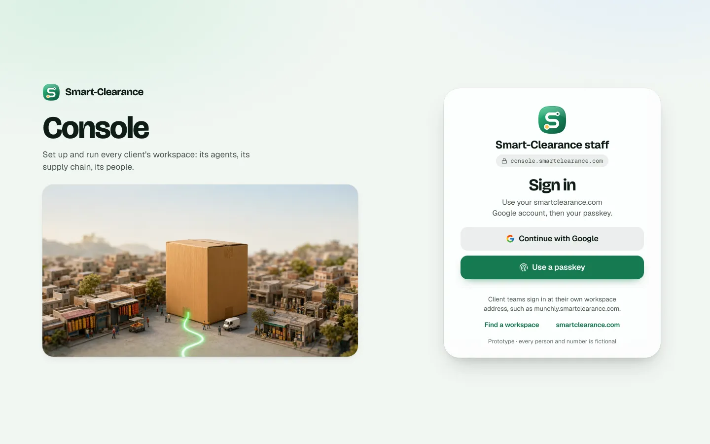
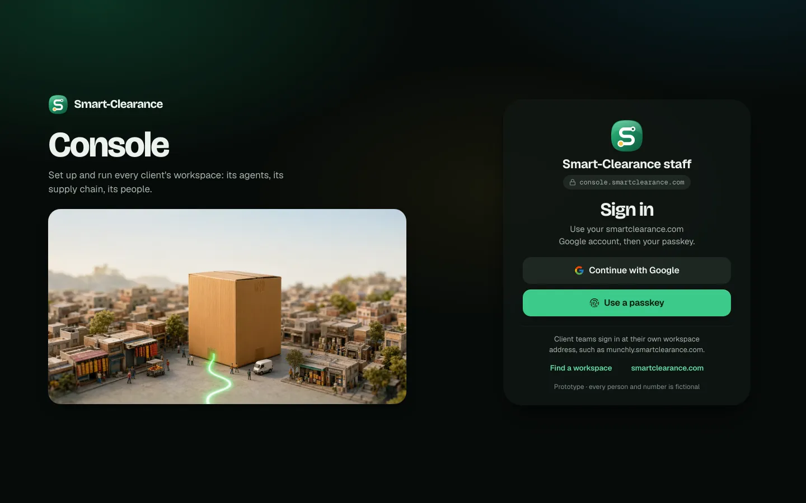
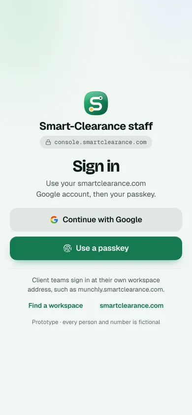
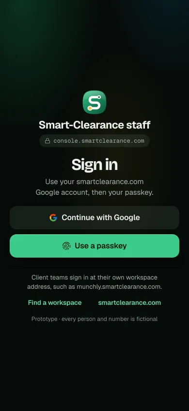
What both options share
A · One step, in the card
RecommendedThe two buttons become the form: work email, password, Sign in. The fastest way in, and the least change to an approved screen.
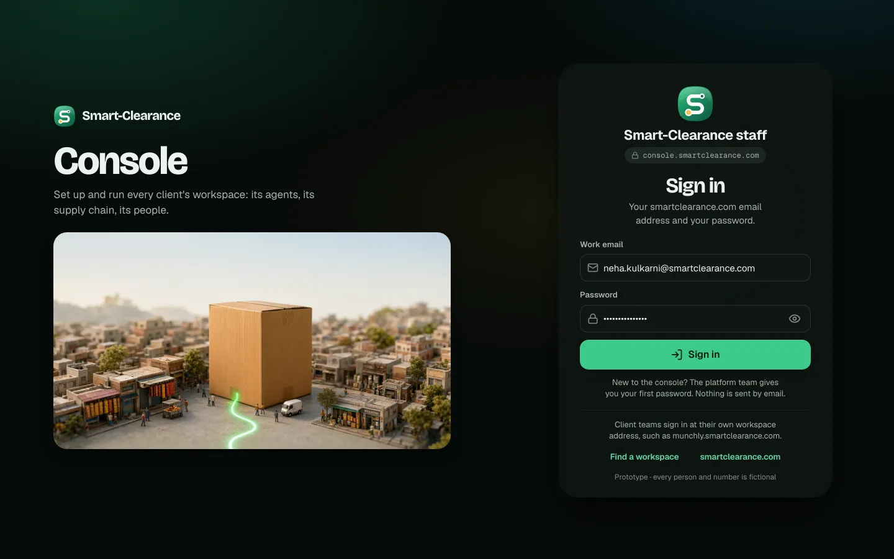
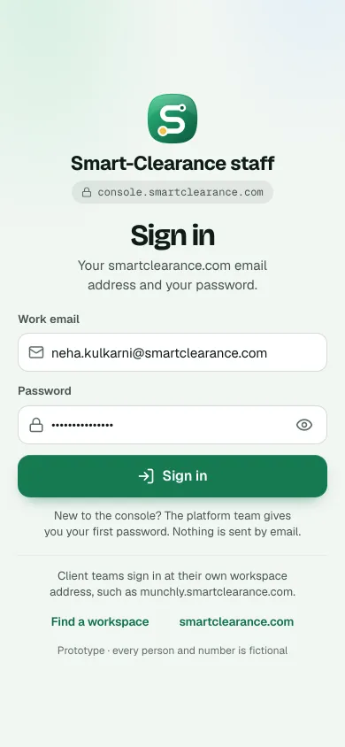
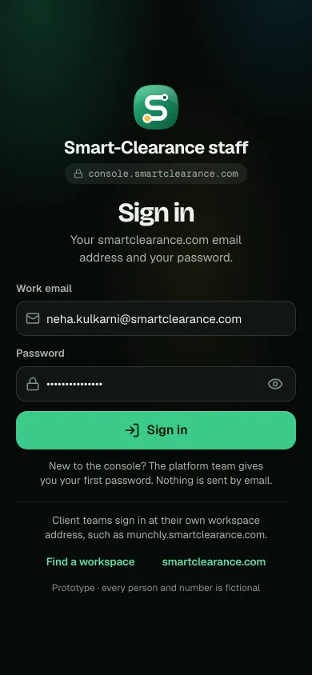
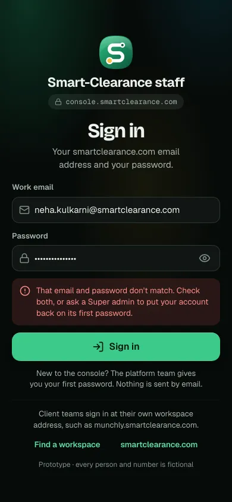
- Why
- One screen, and one press of Return. Password managers fill both fields at once. The card keeps its height on a laptop (1366 × 768).
- Trade-off
- When the workspace sign-in adds Google for a client's own domain, this card would need a second path beside the form.
- What the build touches
- design3:
console/console.jsx's SignIn, two classes inconsole.css. - frontend:
console/src/lib/screens/SignIn.svelte, the session inApp.svelte, Firebase in the console's API client,@smart-clearance/api'ssignIn.
- design3:
B · Email first, then the password
Two steps, as the workspace sign-in (SC-24) asks for an email or a mobile number first: the work email, Continue, then the password beside the account it is for.
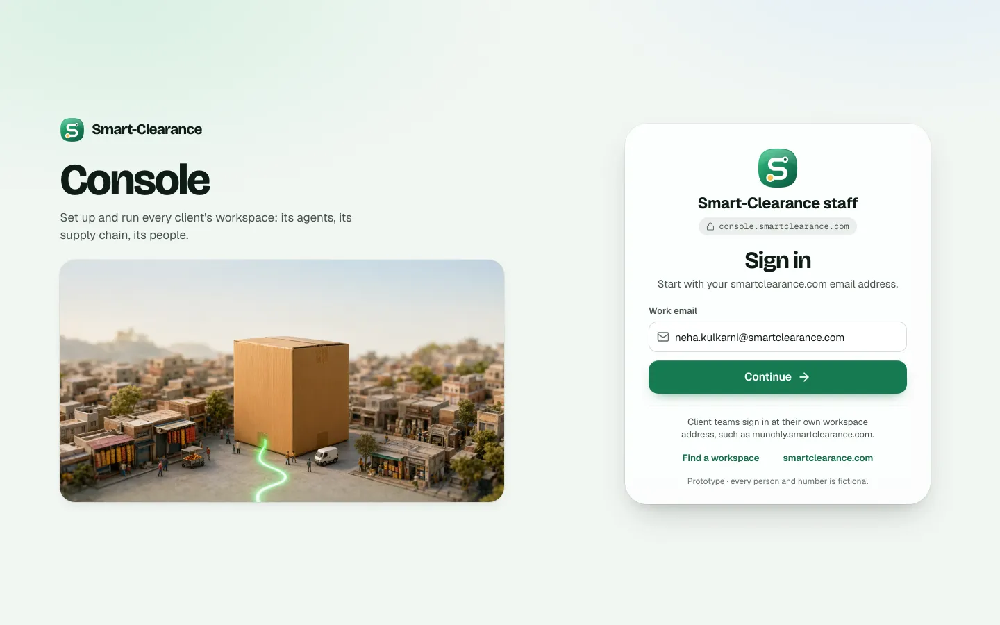
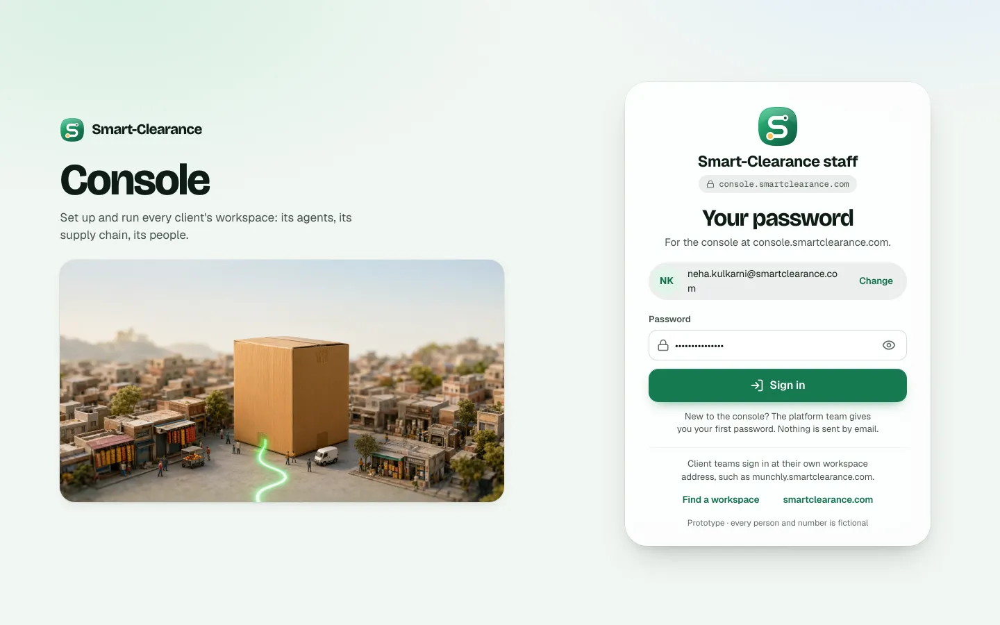
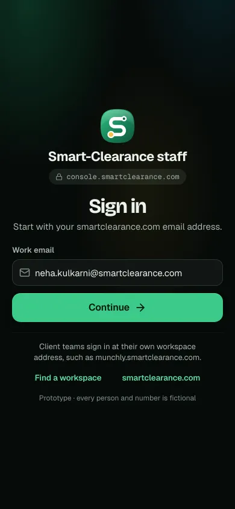
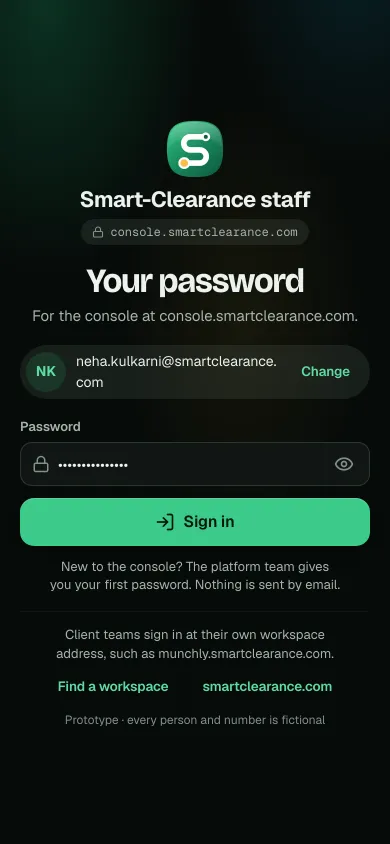
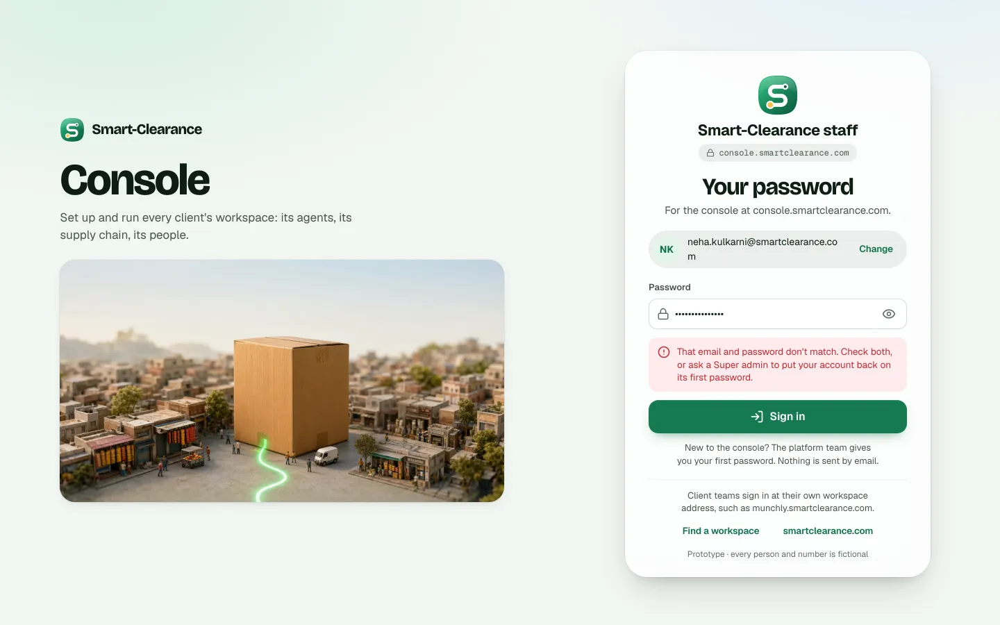
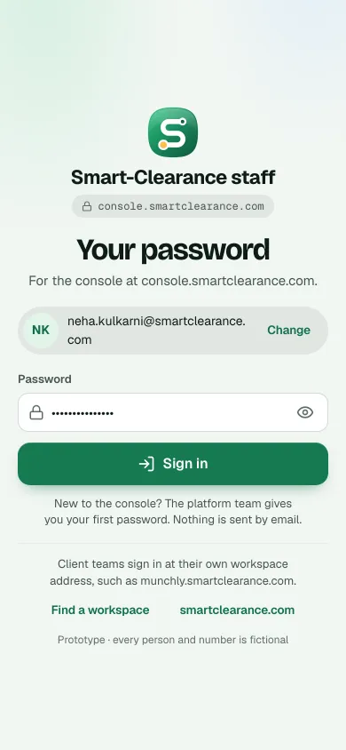
- Why
- One question at a time, and the same rhythm as the workspace sign-in. It leaves room to send a domain with its own sign-in (Google, SSO) elsewhere after step 1.
- Trade-off
- A second screen for every sign-in. With enumeration protection on, step 1 can't say whether the address has an account, so it only checks the address's shape.
- What the build touches
- As A, plus the step state and the account pill (with Change) in SignIn.
Find your workspace, in both
backend-api names the workspace only (SC-43), so the result loses its third line: no "supply-chain operator", no "deactivated by the admin". The landing page and the console's footer link use the same sheet.
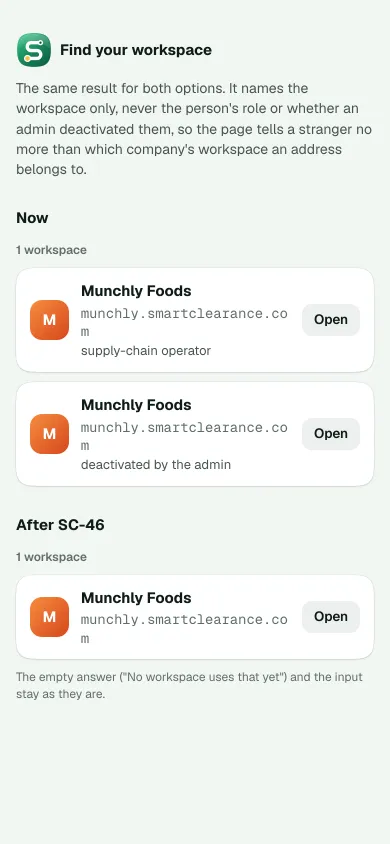
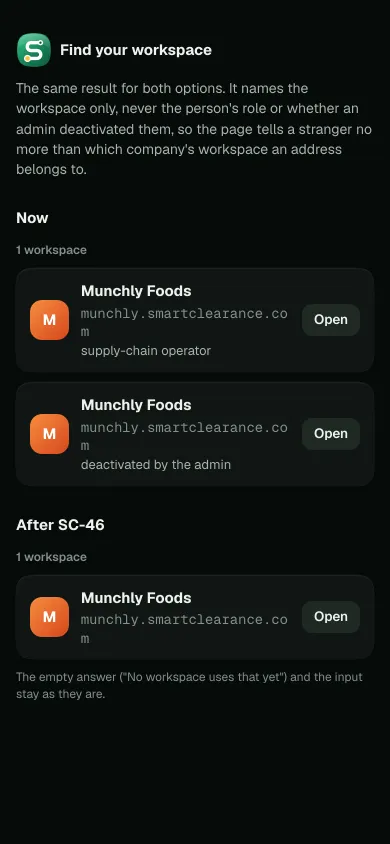
Recommended: A. Staff sign in many times a day. A is one screen, fills from a password manager in one go, and changes the approved sign-in the least. B earns its extra step only once a domain has its own sign-in, which the console's staff don't.